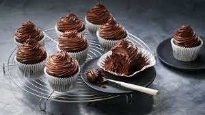

Cocolate-Cup-Cakes Recipes

Description
chocolate cupcake is suitable for the important incidents
for the familyas well for the children
Igrediants
- 10 tablespoons butter
- 1 ¼ cups white sugar
- 4 eggs
- ¼ teaspoon almond extract
- 1 teaspoon vanilla extract
- 1 ½ cups all-purpose flour
- ¾ cup unsweetened cocoa powder
- 2 teaspoons baking powder
- ¼ teaspoon salt
- ¾ cup milk
Steps
-
Step 1
Preheat oven to 350 degrees F (175 degrees C).
Grease two muffin pans or line with 20 paper baking cups
-
Step 2
In a medium bowl, beat the butter and sugar with
an electric mixer until light and fluffy.
Mix in the eggs, almond extract and vanilla.
Combine the flour, cocoa, baking powder
and salt; stir into the batter,
alternating with the milk, just until blended
-
Step 3
Bake in the preheated oven until the tops
spring back when lightly pressed, 20 to 25 minutes.
Cool in the pan set over a wire rack.
When cool, arrange the cupcakes on a serving platter.
Frost with your favorite frosting.